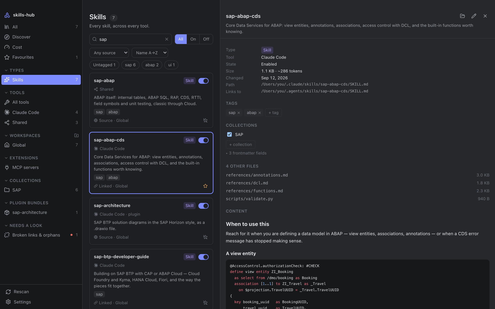
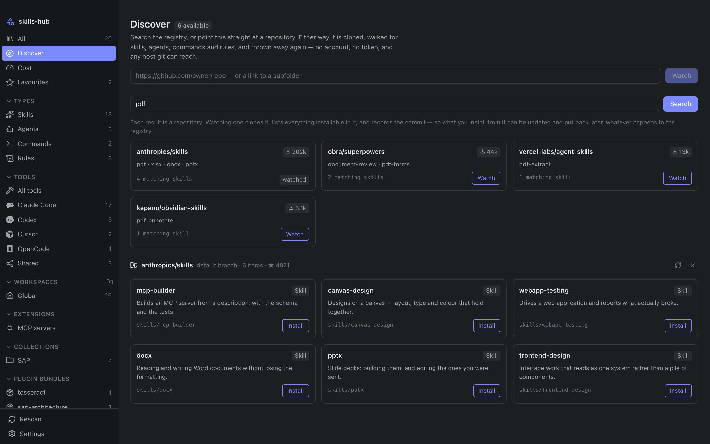
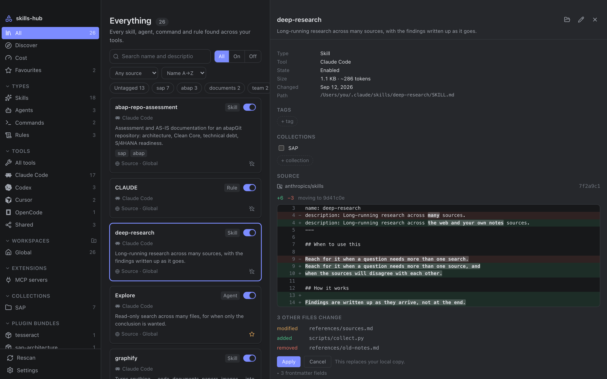
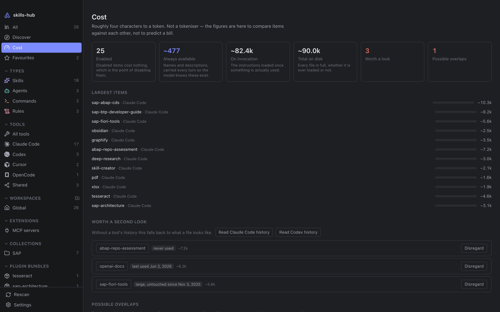
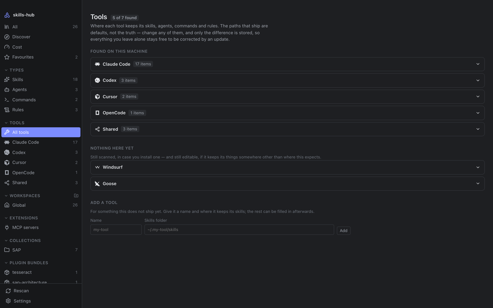
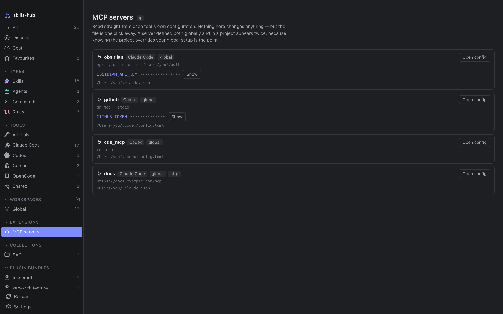
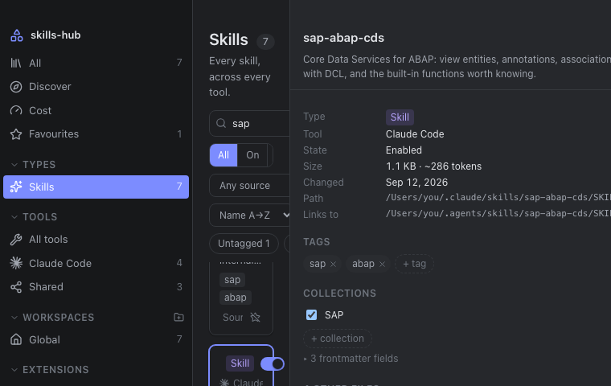

v0.4 · macOS · Windows · Linux · MIT
Sixteen tools keep your skills in sixteen places.
skills-hub gathers the skills, agents, commands and rules from Claude Code, Cursor, Codex and thirteen more into one library — and every switch you flip moves the real file.
brew install --cask nimble-123/tap/skills-hub
No account, no telemetry, nothing to sign in to.
-
01 Scattered
Every tool invented its own folder.
~/.claude/skills,~/.cursor/rules,~/.codex/prompts— global ones, per-project ones, most tools both. Nothing shows you all of them at once. -
02 Drifting
The same prompt, in three folders.
Pasted into each, edited in one. By Thursday there are three versions, and none of them is quite the one you meant.
-
03 Gathered
One library, over the real folders.
Nothing is imported and nothing is copied. The files stay exactly where each tool reads them — the library is a view over them, and every action a real one.

The library. Skills, agents, commands and rules — each type a colour of its own, the same four colours the field above is made of.
On disk
A switch that moves the file.
A checkbox in a manager that never touches the file a tool reads has not disabled anything. Here, off means the tool genuinely stops seeing it. Try it.
Library
- pdf-extract
- commit-message
- review-sql
~/.claude/skills/
- ▸pdf-extract/
- ▸commit-message/
▾.skillmanager-disabled/
- ▸review-sql/
-
Nothing is copied
Linking a global skill into a project makes a symlink, never a duplicate. Two copies drift apart the moment one is edited; a link cannot.
-
Links survive the round trip
A relative symlink is recomputed for its new depth rather than replaced with an absolute path, so a shared skills folder keeps working after it moves and comes back.
-
Your tags live in your vault
One small markdown file per item, in a folder you choose. Inside an Obsidian vault they sync with everything else and stay queryable from Dataview.
-
It will not quietly delete
A scan that could not read a folder never prunes. A note whose item has gone is kept for a fortnight — and indefinitely if you wrote anything in it.
Discover
Install from anywhere. Update with your eyes open.
Search the skills.sh registry by name, or point it at any repository git can reach — no account and no token either way. Nothing is overwritten before you have seen what would change.


Anything installed this way records the commit it came from. That record is what makes checking for updates possible — and putting it back exactly as it was.
Cost
Know what every turn carries.
A tool sends each item's name and description on every turn, so the model knows it exists; the body only loads once the item is used. skills-hub keeps the two apart — only the first is a standing cost.
- session history read
- 0MB
- to read all of it
- 0ms
- guesses from file age
- 0

Where a tool keeps a session history — Claude Code and Codex do — that history says which items have really been used. It is read on request, not on every scan.
Tools
Sixteen tools, and room for yours.
It writes where they already read. Every path is a default, editable and checked against your machine as you type — and only the difference is stored, so a path you leave alone stays free to be corrected by an update.
- 01Claude Code
~/.claude/skills - 02Cursor
~/.cursor/skills - 03Codex
~/.codex/skills - 04OpenCode
~/.config/opencode/skills - 05Antigravity
~/.gemini/config/skills - 06Gemini CLI
~/.gemini/commands - 07GitHub Copilot
~/.copilot/skills - 08Cline
~/Documents/Cline/Rules - 09Trae
~/.trae/skills - 10Windsurf
~/.codeium/windsurf/skills - 11Goose
~/.config/goose/skills - 12Hermes
~/.hermes/skills - 13Pi
~/.pi/agent/skills - 14Roo Code
~/.roo/rules - 15Continue
.continue/prompts - 16Shared
~/.agents/skills


Appearance
Eighteen palettes. Not one hard-coded colour.
The nine VS Code ships with, five you would otherwise install, both SAP Fiori Horizon themes, and the two it started with. A palette is a block of colours and nothing else — it never changes a size, a spacing or a typeface.

Nine typefaces ship with it too — Inter, Geist, Figtree, IBM Plex Sans and Roboto for the interface; JetBrains Mono, Fira Code, Geist Mono and IBM Plex Mono for code. Only the Latin cuts are bundled, so all nine come to 547 KB and need no network.
Architecture
Built to be checked.
Three layers, dependencies pointing inwards only. The domain crate never imports the
UI framework — cargo deny enforces it, not discipline — and
$HOME is injected rather than read, which is what makes the scanner
testable against temporary directories.
A command-line harness drives the same domain code from a terminal. That it can exist at all is the proof the domain really is decoupled. What the application guarantees on disk is written down guarantee by guarantee, each cited to the test that holds it up.
Get it
One command, or two and a coffee.
brew install --cask nimble-123/tap/skills-hub
A universal build, Apple silicon and Intel in one. Builds are not signed yet, so macOS objects the first time: open the app, let it be refused, then allow it under System Settings → Privacy & Security, where an Open Anyway button now sits. Or take the quarantine flag off yourself:
xattr -dr com.apple.quarantine /Applications/skills-hub.app
winget install nimble-123.skills-hub
The winget manifest is in review;
until it is merged, take the -setup.exe from the
latest release.
Every installer on this page comes from the same releases page.
$ git clone https://github.com/nimble-123/skills-hub
$ cd skills-hub
$ pnpm install
$ pnpm tauri build # → .app and .dmg, or your platform'sNeeds Rust, Node and pnpm.
On first launch it asks where to keep its notes. Your skills are never moved or copied to get there — only those notes live in that folder.